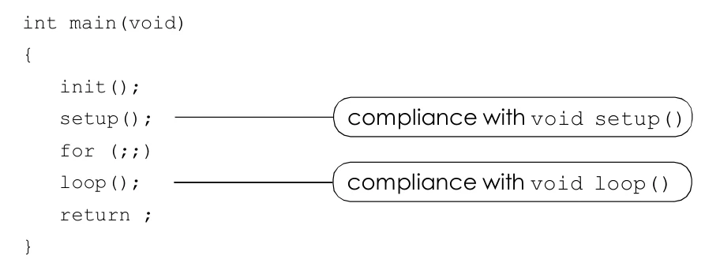

3.1.1 setup () function description
This function is written at the beginning of a program and executes just once when the program starts. It is used to declare variables, operating modes of various pins, or the initialization of libraries, etc.
Example 3-1
int buttonPin = 3;
void setup()
{
beginSerial(9600);
pinMode(buttonPin, INPUT);
}
void loop()
{
if (digitalRead(buttonPin) == HIGH)
serialWrite('H');
else
serialWrite('L');
delay(1000);
}While the standard C programming language is written on AVR GCC (a kind of C programming language using the GCC compiler for the AVR microcontroller) will be coded as follows.

Original manual, page 22